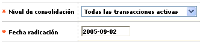

Novedad nivel de consolidación
Este formulario invocado desde la opción ingreso de novedades, (issuer) permite asignar o modificar la forma como el sistema desplegará las transacciones en el extracto.

Descripción de campos
Nivel de consolidación |
Campo tipo combo, obligatorio, en el que se puede seleccionar entre Todas las transacciones activas, Solamente las transacciones efectuadas durante el mes, o Sin transacciones la forma en que se va a presentar la información contenida en el extracto de la tarjeta. |
Fecha de radicación |
Campo obligatorio en el que se registra en formato YYYY-MM-DD la fecha en la cual el cliente solicitó el cambio de nivel de consolidación y que puede ser una fecha anterior a la actual del sistema, facilitando el ingreso de novedades de fechas anteriores. |